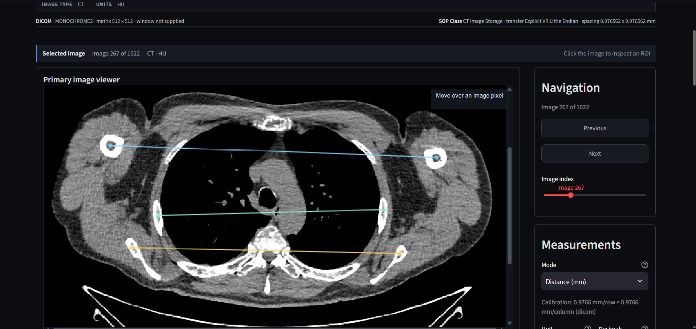
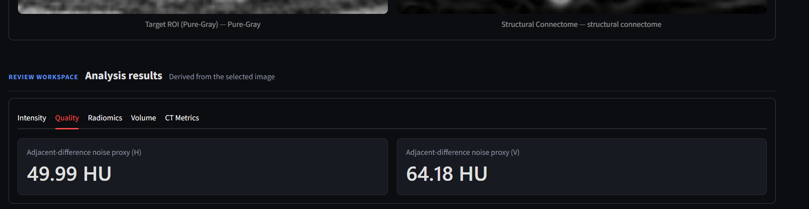
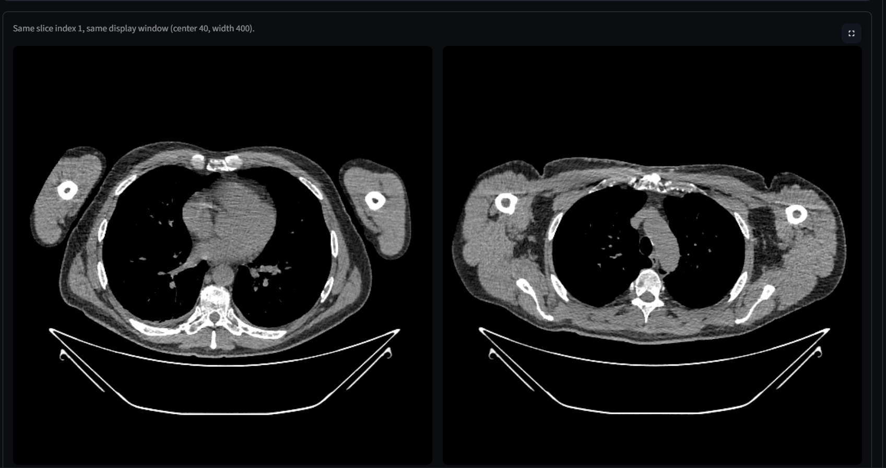
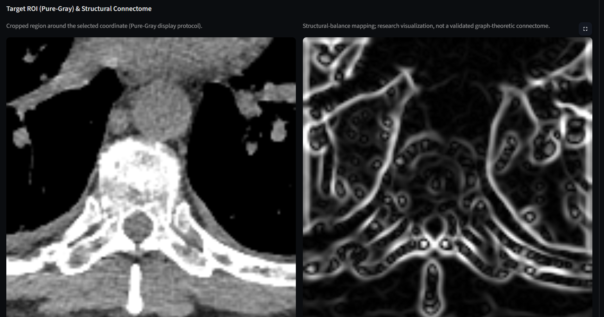
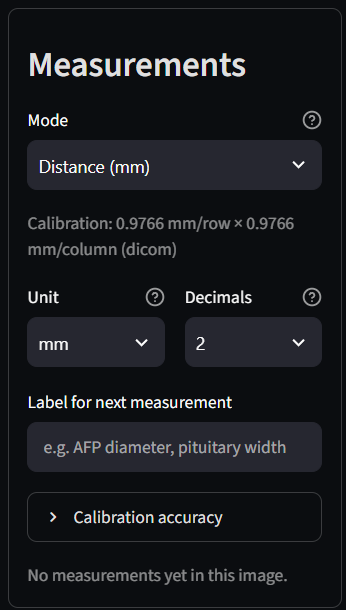
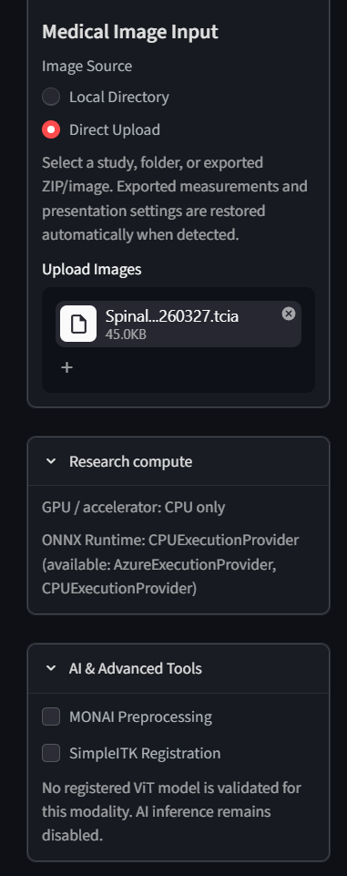
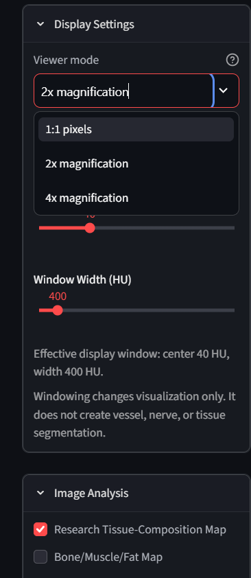
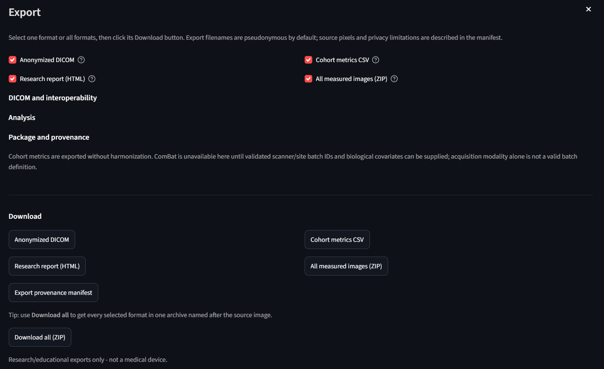

About HEEH-V1
HEEH-V1™ is an open-source medical imaging research and education platform. It brings image review, calibrated measurements, quantitative imaging, radiomics-oriented outputs, experimental AI tools, and provenance-aware export into a single reproducible workflow.
Workflow Overview
HEEH-V1 supports a structured workflow from medical image input to quantitative analysis and documented export.

Overview of the HEEH-V1 medical imaging research workflow.

Quantitative imaging and radiomics-oriented analysis interface.

Experimental AI and medical imaging research tools.

Provenance-aware export and reproducible research outputs.
Application Interface
The HEEH-V1 interface is designed to support medical image review, calibrated measurements, and reproducible quantitative analysis.

DICOM image review and calibrated measurement interface.

Quantitative imaging analysis and radiomics-oriented outputs.

DICOM report export and provenance-aware research workflow.
Provenance-Aware Export
HEEH-V1 supports structured export and documentation of image sources, processing steps, and analysis outputs to support transparency and reproducible research.

DICOM report export interface for reproducible medical imaging research.
Official Resources
Access the source code, archived software release, and technical validation documentation for HEEH-V1.